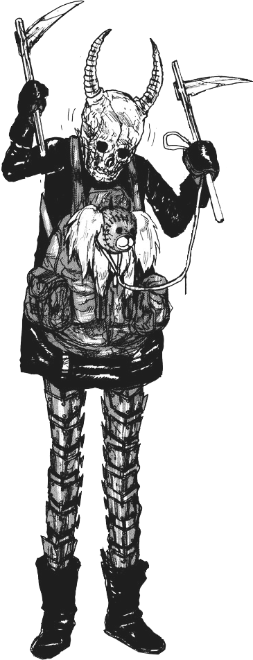

The Minions are small, yellow, cylindrical creatures, who have one or two eyes. They are the signature characters of the Despicable Me series.

Why are we still here?
Just to suffer? Every night, I can feel my leg… and my arm… even my fingers. The body I’ve lost… the comrades I’ve lost… won’t stop hurting… It’s like they’re all still there. You feel it, too, don’t you?